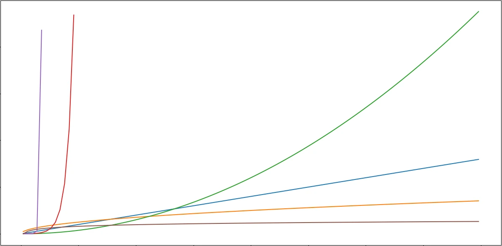

计算理论基础：P 问题、NP 问题和 NPC 问题
时间复杂度
大 O 表示法
如何衡量两个算法的优劣？
通常来说，给定一个算法的运行过程，我们可以写出算法的基本操作数（加减乘除、比较判断、读写数组等）随数据规模变化的函数 $f(n)$。然而，算法的实现细节不同，函数的系数可能存在差异。甚至，我们所谓“基本操作”的用时差别也不能完全忽略。
但是，我们发现，随着数据规模的不断扩大，这些细微差异的影响越来越小，考虑这些细枝末节的问题未免影响大局。
根据经验，线性函数的增长速度总比不上平方级别的；平方级别总比不上立方级别的；而只要是幂函数，最终总比不上指数函数的增长。
于是，我们可以把 $2n^2,n(n-1),3n^2-6n+10$ 等等全归入 $n^2$ 级别；将 $n(n^2-n+1),\dfrac{n^3}{3}$ 等归入 $n^3$……
更形式化地，我们有 大 $\Theta$ 表示法：
对于函数 $f(n),g(n)$，$f(n)=\Theta(g(n))$ 当且仅当 $\exists c_1,c_2,n_0\gt 0$，使 $\forall n\gt n_0,c_1\cdot g(n)\le f(n)\le c_2\cdot g(n).$
需要注意，这里等号 $=$ 的含义更偏向属于号 $\in$。
更多时候，我们对复杂度的要求并不严格，只需给出渐进上界，不关心其渐进下界。那么，我们有 大 O 表示法：
$f(n)=O(g(n))$，当且仅当 $\exists c,n_0$，使得 $\forall n \ge n_0,0\le f(n)\le c\cdot g(n)$。
如果说 $\Theta$ 符号表示“严格等于”，$O$ 符号就表示“大于等于”。
更多时候，尽管确定了渐进下界，鉴于输入习惯，我们仍使用 $O$ 而非 $\Theta$。
常见复杂度级别

注意：对于数值计算，OI 界常常直接用输入数据本身作为数据规模，但更科学的方法是使用数据的长度作为规模。这是 $O(n)$ 与 $O(\log n)$ 的差别，请联系上下文判断。
常数级别 $O(1)$
意味着无论输入数据多大，运行时间都不会改变。
在 OI 界，数的基本运算常被视作 $O(1)$ 的，因此常见于运用公式的计算，如 $\sum_{i=1}^{n}i=\frac{n(n+1)}{2}$，前者是 $O(n)$ 的，后者认为优化到了 $O(1)$；有些数据结构的单次查询复杂度也是 $O(1)$ 的（最简单的如数组）。
不过，考虑到大整数的计算实际上不可能是常数级别，在数据增大时可能只是“伪常数”的。
反阿克曼函数 $O(\alpha(n))$
这是并查集的专利，是一个增速可以忽略不计的函数，$\text{R. E. Tarjan}$ 证明，$\forall n\le 2^{2^{10^{19729}}}$，都有 $\alpha(n)<5$。因此在非学界完全可以视为 $O(1)$。
双对数 $O(\log \log n)$
对数的对数，在分析时几乎可以视为常数忽略。似乎很少见单纯 $O(\log \log n)$ 的算法，但是可以与其他组合。
例如，埃氏筛的时间复杂度是 $O(n\log \log n)$ 的，这意味着其与线性筛 $O(n)$ 的复杂度相差极小，在小数据范围1甚至可能更优。
对数 $O(\log n)$
常见于每次迭代缩小一半规模的算法，例如二分搜索。另外，由于质数个数函数的估计为 $\pi(n)\sim \dfrac{n}{\ln n}$，涉及质数的算法可能也会出现对数。
由于换底公式 $\log_{a}b=\dfrac{\log_{c}b}{\log_{c}a}$，对数底数的差别只是常数的差距；另外，由于 $\log n^k=k\log n$，在 $k$ 为常数时，同样是常数差距。
对数的乘方 $O(\log^k n)$
例如说，在 $O(\log n)$ 查询的数据结构上二分查找的复杂度是 $O(\log^2 n)$ 的；其他多重嵌套的数据结构的复杂度可能达到 $O(\log^k n)$。
亚线性 $O(n^{\epsilon})$
使用根号分治思想的算法通常是 $O(\sqrt{n})$ 的，例如暴力因式分解，或者数论分块；
基于期望的 Pollard-Rho 算法可以快速分解非平凡因子，时间复杂度是 $O(n^{1/4})$ 的；
存在很多亚线性筛快速计算数论函数的前缀和，如杜教筛时间复杂度可达到 $O(n^{2/3})$。
线性 $O(n)$
遍历数组的复杂度。
幂（多项式） $O(n^k)$
多见于 $k$ 重循环。
指数 $O(k^n)$
多见于暴力搜索且不含剪枝，每次有 $k$ 个决策。
阶乘 $O(n!)$
暴力搜索，如枚举全排列。
$O(n^n)$
暴力搜索。
啥是 $\mathsf{P}$ 问题
用一句话来说，$\mathsf{P}$ 问题就是你的计算机（确定性图灵机）可以在 $O(n^k)$ 内跑出结果的问题，这里 $k$ 是与输入无关的常数。
更正式地，复杂度类 $\mathsf{P}$ 表示可以由确定性图灵机在多项式时间内解决的判定问题。
由于普遍认为多项式函数的增长速度是最大的仍能使人接受的增长，我们认为：
一般来说，如果一个问题被归入 $\mathsf{P}$ 问题，我们认为它是快速、实用、高效的。
考虑 $f(x)=x^5,g(x)=2^x$，前者在最初高于后者，但后者在 $23$ 之后彻底反超。如果你做出 $\dfrac{f(x)}{g(x)}$ 和 $\dfrac{g(x)}{f(x)}$ 的图像，感受会更加深刻。
啥是 $\mathsf{NP}$ 问题
很多人在谈论 $\mathsf{NP}$ 问题时会将它与 $\mathsf{NPC}$ 问题或 $\mathsf{NP-hard}$ 问题混淆。
有时，人们也以为，$\mathsf{NP}$ 指需要用超过多项式级别的算法解决问题（如 $O(k^n)$，即暴力搜索）
$\mathsf{NP}$ 问题不是“非”多项式问题；$\mathsf{NP}$ 中的 N 的含义是“不确定的”，换句话说，$\mathsf{NP}$ 问题是非确定性图灵机可以在多项式的时间复杂度内解决的问题；或者说，若这类问题的答案可以由确定性图灵机在多项式时间内验证。
有人可能会疑惑：什么叫验证答案？
例如说，对 $25321938666092955675457495083563$ 分解质因数2。这个问题目前没有多项式级别的算法3。可是，如果我说算出这个数的标准素因数分解式是 $1979263111111333 \times 12793619263623311$：首先，验证质数是可以在多项式时间内完成的4，其次，将两个大数相乘不是难事。你就可以相信，我给出的标准质因数分解式是正确的。
也就是说，可以提交一定的证据，使确定性图灵机经过多项式时间后的验证后确定问题的答案是“YES”。
显然 $\mathsf{P}$ 其实是 $\mathsf{NP}$ 的一个子集，由此你可以看到那些错误的理解有多么离谱。
$\mathsf{P}=\mathsf{NP}?$
这是计算理论至今悬而未决的问题，$\mathsf{P}$ 问题与 $\mathsf{NP}$ 问题这两个集合显然是包含关系，即 $\mathsf{P}\subseteq\mathsf{NP}$，因为能多项式地求解一个问题，必定也能在多项式时间内验证问题。但是，$\mathsf{P}$ 等于 $\mathsf{NP}$ 吗？换句话说，能快速地验证问题，就一定能快速地解决吗？
在 2002 年对于 100 名研究者的调查中，61 人相信答案是否定的，9 人相信答案是肯定的，22 人不确定，而 8 人相信问题可能和现在所接受的公理独立，所以不可能证明或证否。
$\mathsf{NP-hard}$ 问题
这是对 $\mathsf{P}=\mathsf{NP}$ 问题解决的尝试。
所谓 $\mathsf{NP-hard}$ 问题，就是说，所有 $\mathsf{NP}$ 问题可以在多项式时间内规约到这个问题。
那么，什么是“归约”？
这个词语或许有些抽象，你或许听过这个笑话：
有个数学家想改行，于是他准备去应聘消防员。
面试官问：如果发现火灾的怎么办？
数学家：“打开灭火器把火扑灭。”
面试官非常满意正准备让他通过，不经意又问了一句：“那如果发现没有火灾呢？”
数学家：“那就把易燃物点着，构造一个火灾。”
面试官震惊的问他为什么要这么做。
数学家：“这样我们就把一个陌生的问题转化成一个已经解决的问题。”
嗯，尽管“归约”的代价有些大，但确实将问题进行了转化。
不过，$\mathsf{NP-hard}$ 一定是 $\mathsf{NP}$ 吗？
这可不一定。例如，“子集和”的“前 $k$ 大”版本，即：给定 $n$ 个数和 $k(k\lt 2^n)$，判断这 $n$ 个数组成的相异的和的第 $k$ 大是否大于 $m$。
由于“子集和”问题是 $\mathsf{NP-hard}$ 的，且后者可以“归约”到前者，因此前者也是 $\mathsf{NP-hard}$ 的。但由于 $k$ 是 $O(2^n)$ 级别的，前者不可能在多项式时间内验证，故前者只是 $\mathsf{NP-hard}$ 而不是 $\mathsf{NP}$ 问题。
$\mathsf{NPC}$ 问题
或者叫 $\mathsf{NP-complete}$ 问题。
若一个问题既是 $\mathsf{NP}$ 问题，又是 $\mathsf{NP-hard}$ 的，则其是 $\mathsf{NPC}$ 问题。
第一个被证明是 $\mathsf{NPC}$ 的问题是 $\text{SAT}$ 问题，即：给定若干布尔表达式，问，是否存在一种变量取值，使所有表达式的值均为 $\text{TRUE}$。
值得一提，若限定每个表达式中变量的个数为 $k$，则成为 $k-\text{SAT}$ 问题；$2-\text{SAT}$ 存在多项式解，但 $3-\text{SAT}$ 是 $\mathsf{NPC}$ 问题。
$\mathsf{P}=\mathsf{NP}$ 即 $\mathsf{NPC}$ 问题属于 $\mathsf{P}$。
也就是说，若找到一个 $\mathsf{NPC}$ 问题的多项式解（或证明存在），即可说明 $\mathsf{P}=\mathsf{NP}$。
这也是学界倾向于 $\mathsf{P}\ne \mathsf{NP}$ 的原因。想象一下，假如我们找到了一个算法在多项式内解决 $\mathsf{NPC}$ 问题，那么几乎所有问题都可解了。甚至优化算法的工作也可以交给算法。另一方面，由于目前的加密算法全都依赖于 $\mathsf{NPC}$ 问题的难解性，整个世界的通信可能将会崩溃。
多项式真的更快吗？
不过，即使证明了 $\mathsf{P}=\mathsf{NP}$，更大的可能是我们什么也做不了。因为我们或许仍不能确定幂次的大小。即使真的给出了算法，$O(n^{100})$ 或许在现阶段与 $O(2^n)$ 没有差别。
这是另一个话题，多项式实际上不一定比指数快，假如有一个算法的基本操作次数为 $T(n)=2^{1000}n^{2}$，它仍然是多项式的，甚至是 $O(n^2)$ 的，但实际上 $T’(n)=\dfrac{2^n}{1000}$ 可能更优。